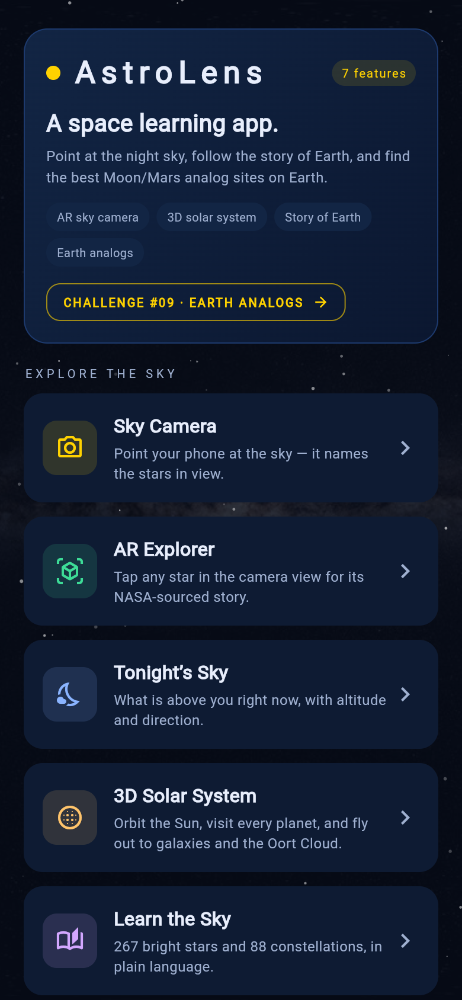
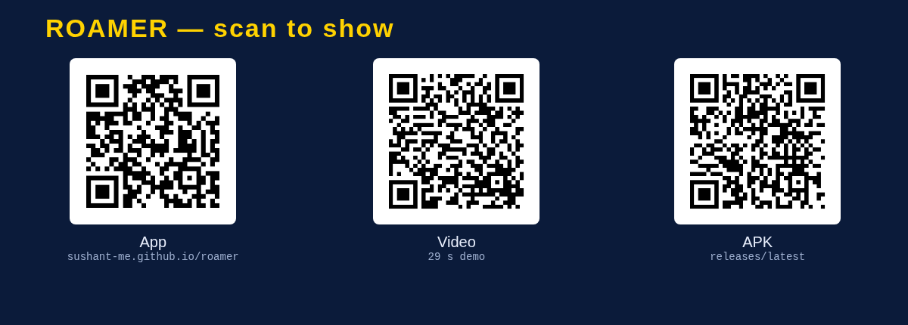

Point your phone at the night sky and name the stars. Fly a 3D solar system. Watch Earth form across 4.6 billion years. Then find the real places on Earth where we should test Moon and Mars hardware.

Scope: the submitted answer is the Earth Analogs engine. Sky Camera, AR Explorer, Tonight's Sky and Learn the Sky share one catalogue (AR Explorer and Sky Dome are modes inside Sky Camera); 3D Solar System and Story of Earth are the engagement layer — seven tiles in total. If we had to cut one feature, it would be 3D Solar System.
NASA tests instruments, procedures and science operations at Earth analog sites before risking them on the Moon or Mars. AstroLens turns that into a transparent, reproducible shortlist: 34 sites on one 500 m grid, a mismatch ledger, and a survey-gap ranking that says where a field campaign would add the most new information. Two controls anchor it — Atacama passes but scores 0.00 because it is already studied; Pokhara fails and scores 0.00. It is a shortlist for investigation, not a certification.
Terrain: AWS Terrain Tiles (Terrarium, SRTM) at 500 m. Climate: Open-Meteo ERA5 2015–2024 (0.25°). Context: NASA POWER MERRA-2, ERA5-Land soil. Attention: OpenAlex counts. Targets: NASA PDS MOLA + THEMIS/Diviner. Similarity weights: terrain 0.45 · thermal 0.15 · illumination 0.15 · aridity 0.25. Gates: slope ≤10°, relief 20–1,500 m, noon Sun ≥20°, precipitation <800 mm/yr, operability ≥0.5. Gap 0.00 means already well-surveyed or gated out — not a failed computation.
Camera + motion sensors name the star you point at; AR Explorer and Sky Dome are modes inside it. Manual aim fallback.
Tilt your phone and a 360° dome of 267 real stars follows. Drag or gyroscope.
Orbit all eight planets, tap a world for a real NASA image and facts, visit galaxies and the Oort Cloud.
Everything above your location right now, with altitude and direction.
267 bright stars and all 88 IAU constellations in plain language.
A 4.6-billion-year timeline, a playable film, materials, and five competing hypotheses.
Our challenge answer: 34 sites on one 500 m grid, a quantified mismatch ledger, and a survey-gap ranking.
